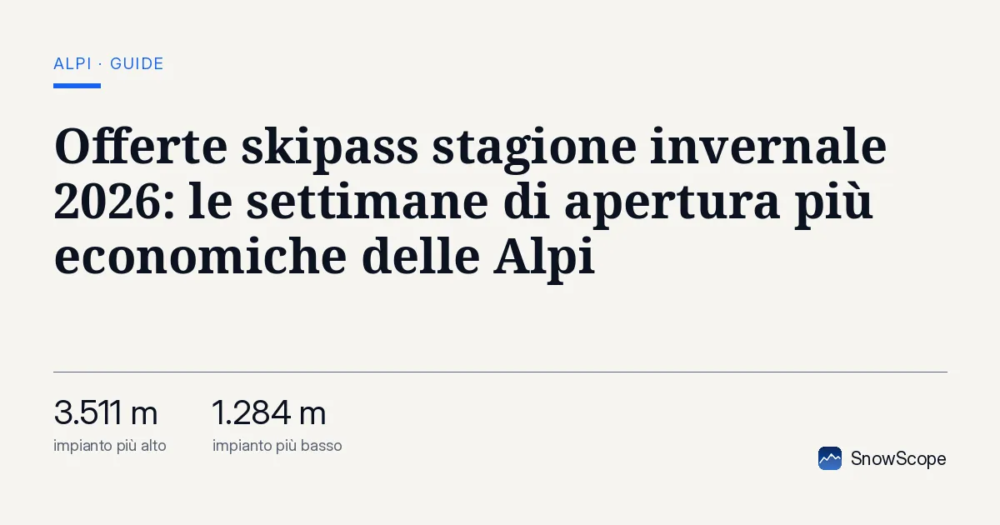

Offerte skipass stagione invernale 2026: le settimane di apertura più economiche delle Alpi
I giorni più economici della stagione sono i primi. Valloire-Valmeinier apre il 5 e 6 dicembre 2026 con uno skipass a 20 EUR, Les 2 Alpes vende il suo weekend di apertura del 28 e 29 novembre a 42 EUR, e Les Orres applica 34 EUR al giorno dal 5 all'11 dicembre. Abbiamo messo le migliori offerte di inizio stagione in un unico calendario e verificato quanta neve portano di solito quelle date.
Le previsioni neve in tempo reale per Les Deux Alpes nell'app SnowScopeAltezza neve, allerte powder e mappa 3D, gratis.
Fine novembre: il primo weekend sulla neve
Les 2 Alpes apre la stagione il 28 e 29 novembre 2026 con uno skipass giornaliero adulti a 42 EUR, contro i 68 EUR del biglietto flessibile normale. Il ghiacciaio sopra la stazione è il motivo per cui può aprire così presto: a media montagna, 2.397 m, la nostra storia nivologica di 46 inverni passati mostra 24 cm in un novembre tipico, e in quota il manto è molto più profondo.
Livigno lancia la sua promozione lo stesso weekend. Dal 28 novembre al 18 dicembre 2026 un giorno adulti costa 51,5 EUR e 6 giorni 258,5 EUR. Dal 19 al 25 dicembre il prezzo giornaliero è 66 EUR, e dal 26 dicembre 74,5 EUR.
Inizio dicembre: i veri affari
Il weekend di apertura di Valloire-Valmeinier, il 5 e 6 dicembre 2026, è l'offerta più economica che abbiamo trovato: 20 EUR per lo skipass, pista di ghiaccio incluisa. Il suo prezzo giornaliero standard per l'inverno è 54,9 EUR. A media montagna la stazione passa di solito da 24 cm in novembre a 67 cm in dicembre, quindi il weekend di apertura spesso si svolge su un manto ancora giovane.
Les Orres usa un calendario prezzi: 34 EUR al giorno dal 5 all'11 dicembre, 38,5 EUR dal 12 al 18 dicembre e 45,5 EUR dal 19 dicembre. Montgenèvre mantiene 45,5 EUR fino al 18 dicembre, poi 56 EUR. In Valle d'Aosta, Monterosa Ski vende online con prezzi variabili: il giorno più basso che abbiamo visto era 40 EUR, il più alto 71 EUR.
La settimana prima di Natale: 6 giorni a meno
Per una settimana intera, Serre Chevalier è l'offerta classica di inizio stagione: 276 EUR per 6 giorni dall'apertura al 18 dicembre 2026, contro 345 EUR dal 19 dicembre al 1 gennaio 2027. La promozione di Livigno a 258,5 EUR vale fino alla stessa data.
La neve di solito si accumula in fretta in dicembre. A media montagna, un dicembre tipico porta 77 cm a Les 2 Alpes, 64 cm a Montgenèvre, 57 cm a Serre Chevalier, 54 cm a Les Orres, 48 cm a Livigno e 35 cm a Monterosa Ski. Più tardi vai a dicembre, migliori sono le tue probabilità.
Come scegliere la tua offerta di inizio stagione
Se vuoi essere sicuro di sciare, punta in alto: Les 2 Alpes a fine novembre, oppure Montgenèvre e Valloire-Valmeinier in dicembre. Se vuoi la spesa più bassa per una settimana, Serre Chevalier e Livigno prima del 18 dicembre sono le scelte più sicure, con comprensori ampi che aprono più piste man mano che arriva la neve.
Monterosa Ski è quella da monitorare giorno per giorno: prenota i suoi prezzi online più bassi solo dopo una buona nevicata, dato che il suo dicembre tipico è il più scarso della lista.
Dormire sulle date dell'offerta
Le settimane di inizio stagione sono anche le più economiche per l'alloggio, ma solo se le tue notti corrispondono all'offerta. La mappa in questo articolo apre ogni stazione sulle date della sua offerta, con soggiorni sotto i 120 EUR a notte: il weekend dal 27 al 29 novembre per Les 2 Alpes, dal 4 al 6 dicembre per Valloire-Valmeinier, dal 5 all'11 dicembre per Les Orres, e dal 12 al 18 dicembre per Livigno e Serre Chevalier.
Le date di apertura dipendono sempre dalla neve. Controlla il sito della stazione pochi giorni prima di partire, e acquista lo skipass online quando è più economico.
Consigli per sciatori
- Offerta più economica: Valloire-Valmeinier, 20 EUR il 5 e 6 dicembre 2026.
- Primo weekend sulla neve: Les 2 Alpes, 42 EUR il 28 e 29 novembre 2026.
- Settimana più economica prima di Natale: Livigno 258,5 EUR o Serre Chevalier 276 EUR per 6 giorni, fino al 18 dicembre.
- Controlla sempre la data di apertura: dipende dalla neve.
Altre mappe (siti esterni)
Riferimenti e crediti
- Les 2 Alpes, official ski pass shop, opening weekend offer www.skipass-2alpes.com/fr/forfaits/ski
- Les 2 Alpes, official ski pass shop, prices 2026-27 www.skipass-2alpes.com/en/pricing
- Valloire, official ski pass shop (Galibier-Thabor), winter 2026-27 skipass.valloire.com/fr/
- Les Orres, official ski pass prices 2026-27 www.lesorres.com/forfaits-de-ski
- Livigno, official ski pass price list 2026-27 (PDF) www.livigno.eu/hubfs/tariffe_26-27.pdf
- Montgenèvre, official ski pass prices 2026-27 skipass.montgenevre.com/fr/tarifs-guichet
- Serre Chevalier, official booking site, ski passes 2026-27 reservation.serre-chevalier.com/achetez-vos-ski-pass-serre-chevalier-et-autres-prestations.html
- Monterosa Ski, official dynamic pricing page 2026-27 monterosaski.eu/en/tariffazione-dinamica-monterosa-ski-19318
Su questi numeri
Numeri della neve: storico neve SnowScope, 46 inverni passati (1980-81 - 2025-26) a tre quote della località, un modello del passato corretto per la quota (una stima per un'area, non i bollettini della località). Impianti, piste e accesso: le fonti qui sotto, verificate alla data indicata.
Cita questo articolo
Per ricerca, didattica o stampa: numeri e grafici sono liberamente riutilizzabili con licenza CC BY 4.0 citando così.
SnowScope (2026), Offerte skipass stagione invernale 2026: le settimane di apertura più economiche delle Alpi, https://snowscope.app/blog/it/2026/11/early-season-ski-deals-2026-cheapest-opening-weeks-alps.html, consultato il 2026-11-19
SnowScope (Atlas Labs). (2026, November 19). Offerte skipass stagione invernale 2026: le settimane di apertura più economiche delle Alpi. SnowScope snow reports. https://snowscope.app/blog/it/2026/11/early-season-ski-deals-2026-cheapest-opening-weeks-alps.html
BibTeX
@misc{snowscope2026earlyseasonskideals2026c,
author = {{SnowScope (Atlas Labs)}},
title = {Offerte skipass stagione invernale 2026: le settimane di apertura più economiche delle Alpi},
year = {2026},
month = nov,
howpublished = {\url{https://snowscope.app/blog/it/2026/11/early-season-ski-deals-2026-cheapest-opening-weeks-alps.html}},
note = {Published 2026-11-19 12:42 UTC; accessed 2026-11-19}
}· CC BY 4.0 · Metodi, dati e strumenti →
Les Deux Alpes: neve e temperatura per quota, quest'inverno vs lo scorso (strumenti) →
Segui Les Deux Alpes
Gratis: un messaggio quando arriva la neve e il meteo ogni mattina.
Altri bollettini neve

Valloire-Valmeinier offre 131 km di piste e il 98 % di probabilità di avere 30 cm di neve a metà montagna entro metà dicembre.

Al Monterosa Ski lo skipass giornaliero online va da 40,00 a 71,00 EUR. A dicembre la neve è in quota: 124 cm abituali a 3.030 m, 6 cm a 1.207 m.

Scia a Livigno per 51,50 EUR al giorno prima del 18 dicembre, quando la neve in cima raggiunge i 30 cm nel 100 % degli inverni passati.